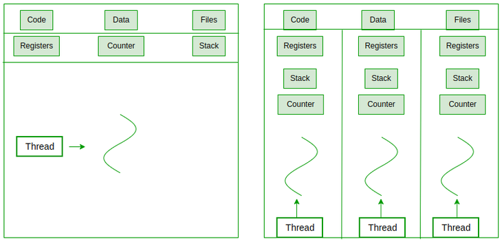
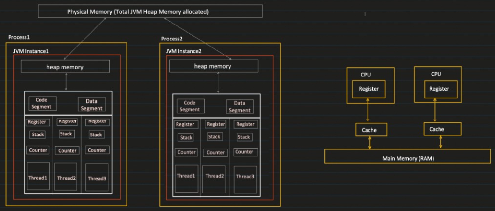
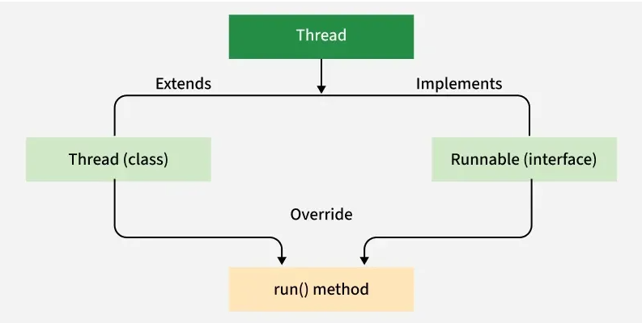
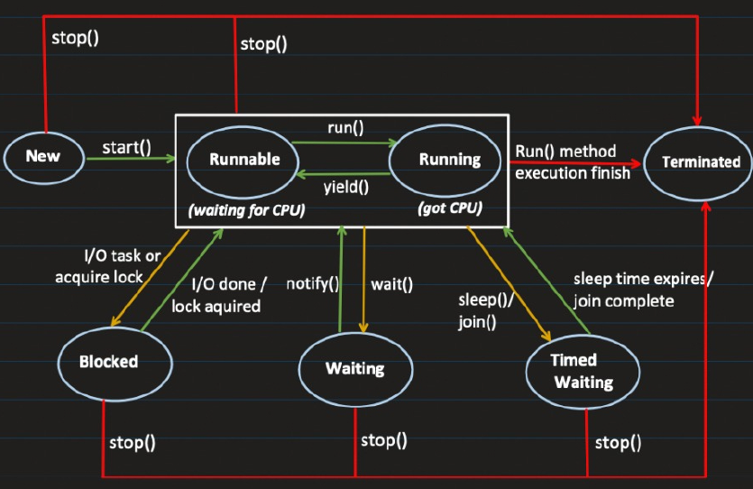

Multithreading — Locks
Thread vs Process
Process
- Process is an instance of a program that is getting executed.
- It has its own resource like memory, thread etc. OS allocate these resources to process when it is created.
- Compilation (
javac Test.java) : generates bytecode that can be executed by JVM. - Execution (
java Test) : at this point, JVM starts the new Process, here Test is the class which haspublic static void main(String args[])method. - How much memory does process gets?
- While creating the process with
java MainClassNamecommand, a new JVM instance will get created and we can tell how much heap memory need to be allocated. java -Xms256m -Xmx2g MainClassName- Where
Xmsis initial allocated size andXmxis maximum size process can get. If it tries to go beyond Xmx size then we will getOutOfMemoryError.
Thread
- Thread is know as lightweight process OR Smallest sequence of instructions that are executed by CPU independently.
- 1 process can have multiple threads.
- When a Process is created, it starts with 1 thread and that initial thread known as 'main thread' and from that we can create multiple threads to perform task concurrently.
public class MultithreadingLearning {
public static void main(String args[]) {
System.out.println("Thread Name: " + Thread.currentThread().getName());
}
}Output:
Thread Name: mainSo basically,
A thread is a lightweight process. Any process can have multiple threads running in it. For example in a web browser, we can have one thread which will load the user interface and another thread which will actually retrieve all the data that needs to be displayed in that interface.
Process = JVM instance
Threads = Multiple tasks running inside JVM

What happens internally when we run -> java -Xms256m -Xmx2g Test
Step-by-step Execution Flow:
-> A new JVM process is started by the OS.
-> The JVM allocates memory using -Xms (initial = 256MB) and -Xmx (maximum = 2GB).
-> The JVM creates the main thread to run the main() method.
-> The Just-In-Time (JIT) compiler starts converting frequently used bytecode into native machine code for better performance.
-> JVM identifies required threads and creates them. Each thread gets:
- Program Counter (PC) Register – stores the address of the current instruction.
- JVM Stack – stores method frames (local variables, operand stack).
- Native Thread – backed by an OS-level thread.
-> The JIT-generated native code is stored in the code cache (code segment) for reuse.

- Code Segment:
- Contains the compiled BYTECODE (i.e machine code) of the Java Program.
- It is read only.
- All threads within the same process, share the same code segment.
- Data Segment:
- Contains the GLOBAL and STATIC variables.
- All threads within the same process, share the same data segment.
- Threads can read and modify the same data.
- Synchronization is required between multiple threads.
- Heap
- Objects created at runtime using the new keyword are allocated in the heap.
- Heap is shared among all the threads of the same process (but NOT across processes).
- (For example: in Process1, heap memory address X8000 may point to some physical memory location; the same X8000 in Process2 will point to a different physical memory location.)
- Threads can read and modify the heap data.
- Synchronization is required between multiple threads.
- Stack
- Each thread has its own stack.
- Stack manages:
- Method calls
- Local variables
- Register
- When JIT (Just‑In‑Time) compiler converts bytecode into native machine code, it uses CPU registers to optimize the generated machine code.
- Registers also help in context switching.
- Each thread has its own register set.
- Counter
- Also known as Program Counter, it points to the instruction which is getting executed.
- Increments its counter after successful execution of the instruction.
All these are managed by JVM.
🧠 Behind the Scenes: CPU Registers & Context Switching
- Context Switching is the process where the CPU switches from one thread to another.
- Since CPU can execute only one thread at a time (per core), it rapidly switches between threads to give an illusion of parallelism.
- Context = Current state of a thread:
- Program Counter (PC) → points to current instruction
- Registers → hold temporary values, stack pointer, flags
- Stack Pointer → points to current stack frame
- When switching happens:
- Save current thread state to Thread Control Block (TCB)
- Load next thread state from Thread Control Block (TCB)
- Resume execution
- Example:
public class ContextSwitchDemo {
public static void main(String[] args) {
Runnable task = () -> {
for (int i = 1; i <= 5; i++) {
System.out.println(Thread.currentThread().getName() + " - " + i);
try {
Thread.sleep(500); // Forces context switch
} catch (InterruptedException e) {
e.printStackTrace();
}
}
};
Thread t1 = new Thread(task, "Thread-1");
Thread t2 = new Thread(task, "Thread-2");
t1.start();
t2.start();
}
}Output will look like:
Thread-1 - 1
Thread-2 - 1
Thread-1 - 2
Thread-2 - 2
...Why interleaving?
-> Because:
Thread.sleep(100)tells CPU → "I’m idle, schedule another thread"- OS performs context switch from Thread-1 → Thread-2
- Flow:
- JVM starts the main thread
t1.start()→ Thread‑1 becomes Runnablet2.start()→ Thread‑2 becomes Runnable- Scheduler picks Thread‑1
- Thread‑1 executes → hits
Thread.sleep(500) - Thread‑1 goes to TIMED_WAITING
- Scheduler switches CPU to Thread‑2 ✅ (context switch)
- Thread‑2 executes → sleeps
- CPU switches back to Thread‑1
- This repeats until both threads finish
What is Thread Control Block (TCB)?
- Thread Control Block (TCB) is a data structure used by the Operating System to manage each thread.
- Think of it as a “thread’s identity card + current state snapshot”.
What does TCB store?
Each thread has its own TCB, which contains:
- 1. Thread State
NEW / RUNNABLE / BLOCKED / WAITING / TERMINATED
- 2. Program Counter (PC)
Which instruction the thread is currently executing
- 3. Registers
CPU register values (important for resuming execution)
- 4. Stack Pointer
Points to thread’s stack (local variables, method calls)
- 5. Thread ID
Unique identifier
- 6. Scheduling Info
Priority
CPU time slice
Queue position
Why TCB is Important?
- During context switching:
- Current thread state is saved into its TCB
- Next thread’s state is loaded from its TCB
- Execution resumes
Flow of Context Switching with TCB
Thread-1 running
↓ (interrupt / sleep)
Save state → TCB-1
Load state ← TCB-2
↓
Thread-2 running- This is how CPU jumps between threads seamlessly
Multitasking vs. Multithreading
Multitasking runs multiple processes concurrently, whereas multithreading runs multiple threads concurrently within the same process.
Ways to Create Threads in Java
Java provides two main ways to create threads:

- By implementing the Runnable interface
- Runnable is an interface with only one method:
void run(); - The run() method defines the task that the thread will execute
- Thread execution does not start automatically by calling run()
Steps to Create Thread using Runnable
- Create a class that implements Runnable
- Implement the run() method to define the task
class MyTask implements Runnable {
public void run() {
// task logic
}
}- Create an instance of the class that implements Runnable
- Pass it to a Thread object
- Call start() to begin execution
public class Practice {
public static void main(String[] args) {
System.out.println("Main thread is running : " + Thread.currentThread().getName());
Runnable runnable = new MyClass();
Thread thread = new Thread(runnable);
thread.start();
System.out.println("Main thread finished");
}
}
class MyClass implements Runnable {
@Override
public void run() {
System.out.println(Thread.currentThread().getName() + " is running");
}
}Output:
Main thread is running : main
Main thread finished
Thread-0 is runningstart()internally callsrun()
- By extending the Thread class
- Create a class extending the Thread class
- override the
run()method - The class itself becomes a thread
public class Practice {
public static void main(String[] args) {
System.out.println("Main thread is running : " + Thread.currentThread().getName());
Thread thread = new MyClass();
thread.start();
System.out.println("Main thread finished");
}
}
class MyClass extends Thread {
@Override
public void run() {
System.out.println(Thread.currentThread().getName() + " is running");
}
}Output:
Main thread is running : main
Main thread finished
Thread-0 is runningWhy Do We Have Two Ways to Create Threads?
- ✅ A class can implement multiple interfaces
- ❌ A class can extend only one class
Conclusion:
Runnable is preferred when:
- Your class already extends another class
- You want better design & flexibility
Thread lifecycle

| Lifecycle State | Description |
|---|---|
| New | • Thread has been created but not started<br>• It’s just an object in memory |
| Runnable | • Thread is ready to run<br>• Waiting for CPU time |
| Running | • When thread starts executing its code |
| Blocked | • Different scenarios where runnable thread goes into blocking state:<br><br>– I/O: like reading from a file or database<br>– Lock acquired: if a thread wants to lock a resource locked by another thread, it has to wait<br><br>• Releases all the monitor locks |
| Waiting | • Thread goes into this state when wait() is called, making it non-runnable<br>• Returns to runnable when notify() or notifyAll() is called<br>• Releases all the monitor locks |
| Timed Waiting | • Thread waits for a specific period and returns to runnable after conditions are met<br>• Examples: sleep(), join()<br><br>• Does not release any monitor lock |
| Terminated | • Life of thread is completed; it cannot be restarted |
Thread.yield()
- It is a hint to the thread scheduler that: “I’m willing to pause now, let other threads run.”
- When a thread calls
yield():
- It moves from RUNNING → RUNNABLE
- Scheduler may pick:
- Same thread again 😅
- Or another thread
- No guarantee that another thread will run
yield() vs sleep()
| Feature | yield() | sleep() |
|---|---|---|
| Guarantees pause | ❌ No | ✅ Yes |
| Releases CPU | Maybe | Yes |
| Releases lock | ❌ No | ❌ No |
| Time-based | ❌ No | ✅ Yes |
yield() vs wait()
| Feature | yield() | wait() |
|---|---|---|
| Guarantees pause | ❌ No | ✅ Yes (until notify(), notifyAll(), timeout, or interruption) |
| Releases CPU | ⚠️ Requests to give up CPU; scheduler may ignore it | ✅ Yes |
| Releases lock | ❌ No | ✅ Yes (releases the object's monitor) |
| Time-based | ❌ No | Optional (wait(timeout)) |
| Purpose | Hint to the scheduler to allow other runnable threads to execute | Inter-thread communication and synchronization |
| Thread State | Usually remains RUNNABLE (scheduler-dependent) | Enters WAITING or TIMED_WAITING |
| Static Method | ✅ Yes | ❌ No (instance method of Object) |
| Requires owning monitor? | ❌ No | ✅ Yes, otherwise IllegalMonitorStateException |
Monitor lock
- It ensures that only one thread can go inside the particular section of code (synchronized block or method).
- Synchronized instance method locks the object, static synchronized locks the class, and synchronized block locks only the specified section.
public class Practice {
public static void main(String[] args) {
MonitorLockExample monitorLockExample = new MonitorLockExample();
Thread t1 = new Thread(()-> monitorLockExample.task1());
Thread t2 = new Thread(()-> monitorLockExample.task2());
Thread t3 = new Thread(()-> monitorLockExample.task3());
t1.start();
t2.start();
t3.start();
System.out.println("finished -> " + Thread.currentThread().getName());
}
}
class MonitorLockExample {
public synchronized void task1() {
try {
System.out.println("Inside task1 " + Thread.currentThread().getName());
System.out.println(Thread.currentThread().getName() + " is going to sleep");
Thread.sleep(10000);
System.out.println(Thread.currentThread().getName() + " is woke up and lock is released");
} catch (InterruptedException e) {
throw new RuntimeException(e);
}
}
public void task2() {
System.out.println("Inside task2, before synchronization");
synchronized (this){ // t2 has to wait here since the lock is acquired by t1
System.out.println("Inside task2 synchronized block");
}
}
public void task3(){
System.out.println("Inside task3");
}
}Output:
finished -> main
Inside task1 Thread-0
Thread-0 is going to sleep
Inside task2, before synchronization
Inside task3
(wait 10 seconds)
Thread-0 is woke up and lock is released
Inside task2 synchronized blockKey points -
Thread Needs monitor lock? What happens?
t1 Yes (task1 is synchronized) Acquires the lock and sleeps while still holding it.
t2 Yes (synchronized(this)) Prints the first line, then becomes BLOCKED waiting for the lock.
t3 No Executes immediately because it doesn't require the monitor lock.Shared resource example
public class Practice {
public static void main(String[] args) {
SharedResource sharedResource = new SharedResource();
Thread producer = new Thread(() -> {
System.out.println("Producer thread " + Thread.currentThread().getName());
try {
Thread.sleep(5000);
} catch (InterruptedException e) {
throw new RuntimeException(e);
}
sharedResource.addItem();
});
Thread consumer = new Thread(() -> {
System.out.println("Consumer thread " + Thread.currentThread().getName());
sharedResource.consumeItem();
});
producer.start();
consumer.start();
System.out.println("Main thread finished");
}
}
class SharedResource{
boolean isItemAvailable = false;
public synchronized void addItem(){
isItemAvailable = true;
System.out.println("Item added by " + Thread.currentThread().getName() + " and notifying/invoking all threads which are waiting.");
notifyAll();
}
public synchronized void consumeItem(){
System.out.println("ConsumeItem method called by " + Thread.currentThread().getName());
while(!isItemAvailable){
try {
System.out.println("Consumer Thread: " + Thread.currentThread().getName() + " is waiting...");
wait(); // it will release monitor lock
} catch (InterruptedException e) {
throw new RuntimeException(e);
}
}
System.out.println("Item consumed by " + Thread.currentThread().getName());
isItemAvailable = false;
}
}Output:
Main thread finished
Consumer thread Thread-1
Producer thread Thread-0
ConsumeItem method called by Thread-1
Consumer Thread: Thread-1 is waiting...
Item added by Thread-0 and notifying/invoking all threads which are waiting.
Item consumed by Thread-1Producer-Consumer problem
Question: Two threads, a producer and a consumer, share a common, fixed-size buffer as a queue. The producer's job is to generate data and put it into the buffer, while the consumer's job is to consume the data from the buffer. The problem is to make sure that the producer won't produce data if the buffer is full, and the consumer won't consume data if the buffer is empty.
Solution:
public class Practice {
public static void main(String[] args) {
SharedResource sharedResource = new SharedResource(5);
Thread producer = new Thread(() -> {
System.out.println("Producer thread " + Thread.currentThread().getName());
for (int i = 1; i <= 8; i++) {
try {
sharedResource.produce(i);
} catch (InterruptedException e) {
throw new RuntimeException(e);
}
}
});
Thread consumer = new Thread(() -> {
System.out.println("Consumer thread " + Thread.currentThread().getName());
for (int i = 1; i <= 8; i++) {
try {
sharedResource.consume();
} catch (InterruptedException e) {
throw new RuntimeException(e);
}
}
});
producer.start();
consumer.start();
System.out.println("Main thread finished");
}
}
class SharedResource {
private Queue<Integer> sharedBuffer;
private int buffersize;
public SharedResource(int buffersize) {
sharedBuffer = new LinkedList<>();
this.buffersize = buffersize;
}
public synchronized void produce(int item) throws InterruptedException {
while (sharedBuffer.size() == buffersize) {
System.out.println("Buffer is full, producer is waiting for consumer");
wait(); // releases the lock
}
sharedBuffer.add(item);
System.out.println("Produced item -> " + item);
notify();
}
public synchronized int consume() throws InterruptedException {
while (sharedBuffer.isEmpty()) {
System.out.println("Buffer is empty, Consumer is waiting for producer");
wait(); // releases the lock
}
int item = sharedBuffer.poll();
System.out.println("Consumed item -> " + item);
notify();
return item;
}
}Output:
Main thread finished
Producer thread Thread-0
Consumer thread Thread-1
Produced item -> 1
Produced item -> 2
Produced item -> 3
Produced item -> 4
Produced item -> 5
Buffer is full, producer is waiting for consumer
Consumed item -> 1
Consumed item -> 2
Consumed item -> 3
Consumed item -> 4
Consumed item -> 5
Buffer is empty, Consumer is waiting for producer
Produced item -> 6
Produced item -> 7
Produced item -> 8
Consumed item -> 6
Consumed item -> 7
Consumed item -> 8Unsafe thread operations:
In Java Thread class:
stop()suspend()resume()
- All are deprecated because they are unsafe
- Why
stop()is deprecated?
- It kills thread abruptly
- Thread may be in middle of critical operation
- Locks are released immediately
- Object state may become inconsistent (corrupt data)
synchronized (obj) {
obj.balance -= 100; // deducted
thread.stop(); // thread stopped here ❌
obj.logTransaction(); // never executed
}- Result:
Money deducted
No record → data inconsistency
- Why
suspend()is deprecated?
- It causes deadlock
- Thread is paused while holding a lock
- Other threads waiting for that lock → blocked forever
synchronized (obj) {
thread.suspend(); // holds lock forever ❌
}- Other threads:
Can’t access obj
System gets stuck → deadlock
- Why resume() is problematic?
- Unpredictable behavior
- If
resume()is called beforesuspend()
→ thread may never resume
- Leads to:
- Lost signals
- Hard-to-debug bugs
| Method | Problem |
|---|---|
stop() | Data inconsistency |
suspend() | Deadlock |
resume() | Unpredictable / lost signals |
Modern Alternatives
- Instead of
stop()use flag-based control
class Task implements Runnable {
volatile boolean running = true;
public void run() {
while (running) {
System.out.println("Running...");
}
}
public void stop() {
running = false;
}
}- Instead of suspend()/resume()
wait()/notify()- Lock + Condition
Thread.sleep()(controlled pause)
Thread join
join()makes one thread wait for another thread to finish
class JoinExample {
public static void main(String[] args) {
Thread t1 = new Thread(() -> {
System.out.println("T1 started");
try { Thread.sleep(1000); } catch (Exception e) {}
System.out.println("T1 finished");
});
Thread t2 = new Thread(() -> {
System.out.println("T2 waiting for T1...");
try {
t1.join(); // T2 waits for T1
} catch (InterruptedException e) {}
System.out.println("T2 resumes after T1");
});
t1.start();
t2.start();
}
}Output:
T1 started
T2 waiting for T1...
T1 finished
T2 resumes after T1Thread Priority
- It’s a hint to the scheduler about which thread should get CPU first
- Priority Levels
Thread.MIN_PRIORITY = 1
Thread.NORM_PRIORITY = 5 (default)
Thread.MAX_PRIORITY = 10class PriorityDemo {
public static void main(String[] args) {
Thread t1 = new Thread(() -> System.out.println("Low Priority"));
Thread t2 = new Thread(() -> System.out.println("High Priority"));
t1.setPriority(Thread.MIN_PRIORITY); // 1
t2.setPriority(Thread.MAX_PRIORITY); // 10
t1.start();
t2.start();
}
}- Priority is NOT guaranteed
- OS scheduler decides execution
- High priority thread may NOT always run first
- We can set custom priority using
setPriority(int priority)method.
Daemon thread –
- In Java, a daemon thread is a special type of thread that runs in the background and is primarily used for tasks that support the application but don't need to be completed before the application terminates. A daemon thread does not prevent the JVM from exiting. The JVM will terminate as soon as all the non-daemon threads (user threads) have completed their execution, even if the daemon threads are still running. Their key feature is that they don't keep the application alive once all user threads have finished executing.
- Use Cases: Common use cases for daemon threads include:
- Garbage collection, AutoSave
- Background tasks that periodically check conditions
- Logging or monitoring tasks that run indefinitely
- They perform background work only while your application is alive.
- In Java, you can create a daemon thread by setting the thread as a daemon before starting it. This is done using the
setDaemon(true)method.
public class Practice {
public static void main(String[] args) {
Thread t = new Thread(() -> {
try {
Thread.sleep(10000);
} catch (InterruptedException e) {
throw new RuntimeException(e);
}
});
t.setDaemon(true);
t.start();
System.out.println("Main thread finishes");
}
}Output:
Main thread finishes
Process finished with exit code 0Note: If thread is not daemon, then line -> "Process finished with exit code 0" in output gets printed after all threads completed their work. (after 10 seconds in this case). But if thread is daemon then process will get exited as soon as there is no non-daemon thread.
Custom locks and their types
Reentrant lock:
- The lock is not dependent on object.
- Even if different object is created and trying to access a particular method then also it cannot be accessed until lock is released.
public class Practice {
public static void main(String[] args) {
ReentrantLock lock = new ReentrantLock();
SharedResource sharedResource1 = new SharedResource();
Thread t1 = new Thread(()-> {
sharedResource1.produce(lock);
});
SharedResource sharedResource2 = new SharedResource();
Thread t2 = new Thread(()-> {
sharedResource2.produce(lock);
});
t1.start();
t2.start();
}
}
class SharedResource {
boolean isAvailable = false;
public void produce(ReentrantLock reentrantLock){
try{
reentrantLock.lock();
System.out.println("Lock acquired by: " + Thread.currentThread().getName());
isAvailable = true;
Thread.sleep(5000);
} catch (Exception e){
} finally {
reentrantLock.unlock();
System.out.println("Lock released by: " + Thread.currentThread().getName());
}
}
}Output:
Lock acquired by: Thread-0
(wait 5 seconds)
Lock released by: Thread-0
Lock acquired by: Thread-1
(wait 5 seconds)
Lock released by: Thread-1In the above example, both thread calling produce method using different objects but still t2 is not able to progress because lock is in place. After 4 seconds when lock is released by t1 then t2 can progress. So, locking happened on the basis of lock object and not on the basis of resource object.
What if you used synchronized instead?
public synchronized void produce() {
...
}- Then: Lock is on object (
this)
❗ Result:t1 locks sharedResource1t2 locks sharedResource2
- Both run in parallel ✅
Read write lock:
- Read-Write Lock is a synchronization mechanism that allows multiple threads to read data concurrently while ensuring exclusive access to write operations. The idea is that reading does not modify the shared resource, so multiple threads can safely read it at the same time. However, if a thread needs to write to the resource, it must acquire exclusive access, meaning no other threads can read or write at the same time.
- Read Lock (Shared Lock):
- Multiple threads can acquire the read lock simultaneously, as long as no thread holds the write lock.
- It is suitable when threads need to read shared data without modifying it.
- Write Lock (Exclusive Lock):
- Only one thread can acquire the write lock at a time, and no other threads (neither readers nor writers) can access the shared resource when a thread holds the write lock.
- This is suitable when a thread needs to modify the shared data.
ReentrantReadWriteLock lock = new ReentrantReadWriteLock();
Thread t1 = new Thread(() -> {
lock.readLock().lock();
System.out.println("T1 reading...");
try { Thread.sleep(5000); } catch (Exception e) {}
lock.readLock().unlock();
});
Thread t2 = new Thread(() -> {
System.out.println("T2 trying to write...");
lock.writeLock().lock();
System.out.println("T2 writing...");
lock.writeLock().unlock();
});
t1.start();
t2.start();Output:
T1 reading...
T2 trying to write...
(wait...)
T2 writing...Explanation:
- Thread-1 acquires read lock
- Thread-2 tries to acquire write lock
- Result:
- Thread-2 will BLOCK
- Until ALL read locks are released
- write operation needs:
- exclusive access
- No readers (to avoid inconsistent data)
- If write lock is acquired:
👉 ❌ No read lock allowed
👉 ❌ No other write lock allowed Write lock is exclusive and must wait until all read locks are released, while multiple read locks can coexist.
StampedLock (Optimistic lock):
- It did not put an actual lock on any object. It first put read lock which will return the current state. When we are writing/updating then we need to pass the state (which was returned by read lock). If the state is still same then only we can update the value otherwise it will rollback and we need to read the value again before attempting to update the value.
- Instead of returning a lock object, it returns a stamp (long value):
long stamp = lock.readLock(); - Types of Locks in StampedLock
- Write Lock (Exclusive) =>
long stamp = lock.writeLock(); - Read Lock (Shared) =>
long stamp = lock.readLock(); - Optimistic Read =>
long stamp = lock.tryOptimisticRead();
👉 Does NOT acquire a lock
👉 No blocking
👉 Just assumes no write will happen class Point {
private int x, y;
private StampedLock lock = new StampedLock();
int distance() {
long stamp = lock.tryOptimisticRead();
int currentX = x, currentY = y;
if (!lock.validate(stamp)) { // validate stamp before acquiring read lock.
stamp = lock.readLock();
try {
currentX = x;
currentY = y;
} finally {
lock.unlockRead(stamp);
}
}
return currentX * currentX + currentY * currentY;
}
}Semaphore lock:
- It is same as Reentrant lock with the additional control over several threads which can access a piece of code. While creating object of Semaphore lock, we can pass a number which is nothing but a number of threads which can simultaneously access the code.
- Think of Semaphore as a gate with limited passes (permits)
- If permits available → thread enters
- If no permits → thread waits
- Important Methods:
- acquire() → Take permit =>
semaphore.acquire(); - release() → Return permit =>
semaphore.release(); - tryAcquire() → Non-blocking =>
semaphore.tryAcquire()
public class Practice {
public static void main(String[] args) {
Semaphore semaphore = new Semaphore(2);
for (int i = 0; i < 5; i++) {
new Worker(semaphore).start();
}
}
}
class Worker extends Thread {
Semaphore semaphore;
Worker(Semaphore semaphore) {
this.semaphore = semaphore;
}
public void run() {
try {
semaphore.acquire();
System.out.println(Thread.currentThread().getName() + " acquired permit");
Thread.sleep(2000);
System.out.println(Thread.currentThread().getName() + " releasing permit");
semaphore.release();
} catch (InterruptedException e) {
e.printStackTrace();
}
}
}Output:
Thread-0 acquired permit
Thread-1 acquired permit
Thread-0 releasing permit
Thread-1 releasing permit
Thread-4 acquired permit
Thread-2 acquired permit
Thread-2 releasing permit
Thread-3 acquired permit
Thread-4 releasing permit
Thread-3 releasing permit- Only 2 threads run at a time
- Others wait
Lock Condition
- A Lock Condition is a mechanism that allows threads to wait and be notified based on specific conditions, giving you much finer control than traditional wait()/notify().
- A Condition is like a waiting room for threads tied to a lock.
- Threads can wait → await()
- Other threads can notify → signal() / signalAll()
- Each Condition represents a specific condition/state of your program.
- Example:
public class Practice {
public static void main(String[] args) {
Buffer buffer = new Buffer();
Thread t1 = new Thread(() -> {
try {
for(int i =0;i<5;i++){
buffer.produce();
}
} catch (InterruptedException e) {
throw new RuntimeException(e);
}
});
Thread t2 = new Thread(() -> {
try {
for(int i =0;i<4;i++){
buffer.consume();
}
} catch (InterruptedException e) {
throw new RuntimeException(e);
}
});
t1.start();
t2.start();
}
}
class Buffer {
private int count = 0;
private final int capacity = 5;
private final Lock lock = new ReentrantLock();
private final Condition notFull = lock.newCondition();
private final Condition notEmpty = lock.newCondition();
public void produce() throws InterruptedException {
lock.lock();
try {
while (count == capacity) {
notFull.await(); // wait until space available
}
count++;
System.out.println("Produced, count = " + count);
notEmpty.signal(); // notify consumers
} finally {
lock.unlock();
}
}
public void consume() throws InterruptedException {
lock.lock();
try {
while (count == 0) {
notEmpty.await(); // wait until item available
}
count--;
System.out.println("Consumed, count = " + count);
notFull.signal(); // notify producers
} finally {
lock.unlock();
}
}
}Output:
Produced, count = 1
Produced, count = 2
Produced, count = 3
Produced, count = 4
Produced, count = 5
Consumed, count = 4
Consumed, count = 3
Consumed, count = 2
Consumed, count = 1Volatile:
- It is a modifier that ensures the most up-to-date value of a variable is always visible across all threads.
- Every read of the volatile variable will fetch the most recent value from the main memory (not from the thread’s local cache).
- Every write to a volatile variable will be written directly to the main memory, making it immediately visible to other threads.
- This is different from non-volatile variables, where each thread may maintain a cached copy of the variable (in the thread's local memory or cache), leading to potential inconsistencies.